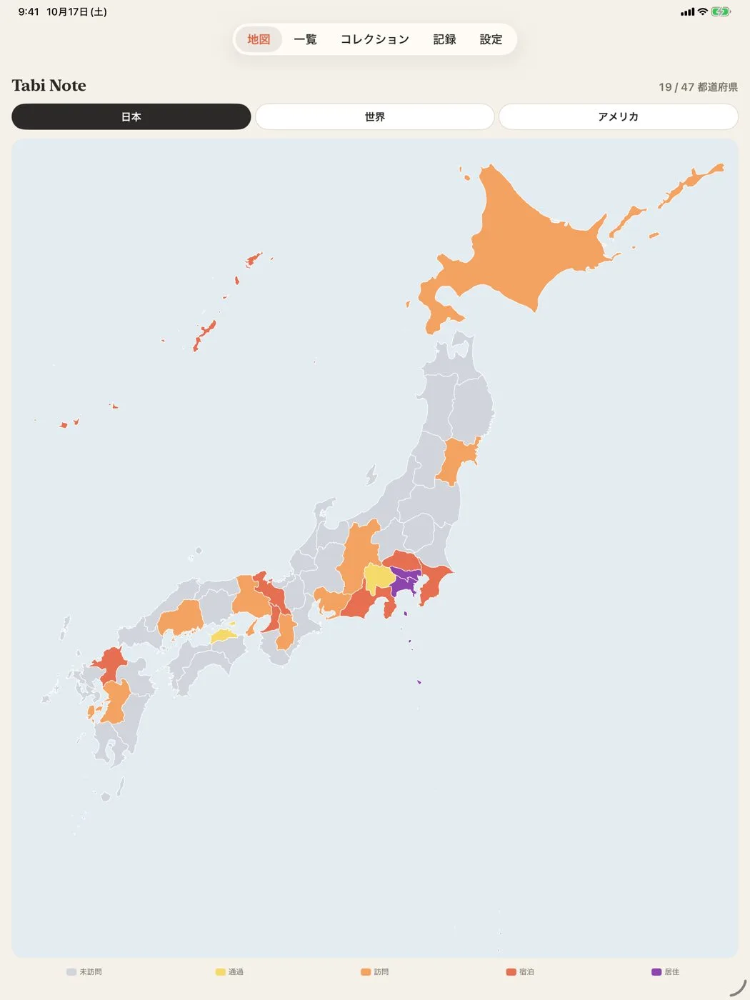
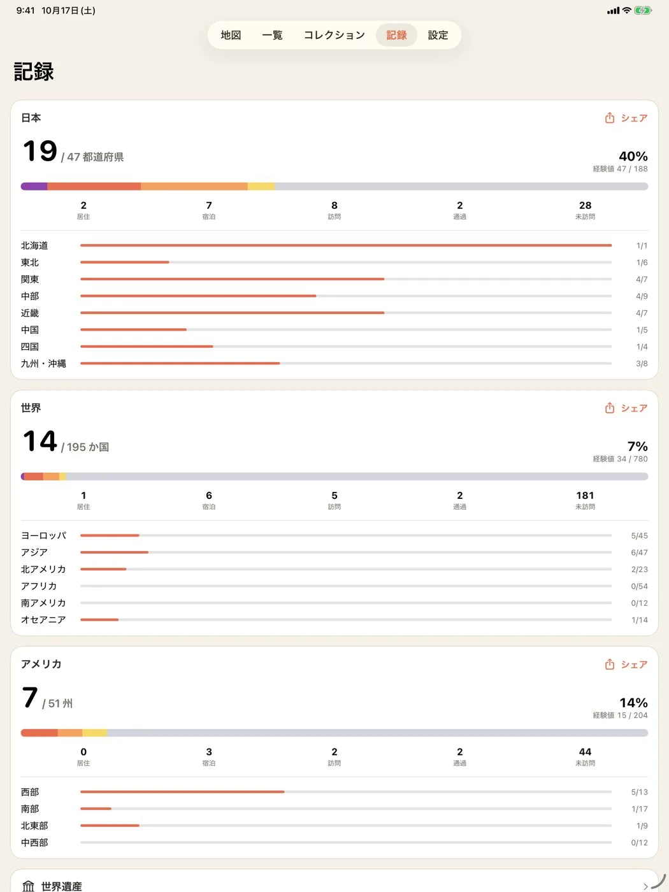
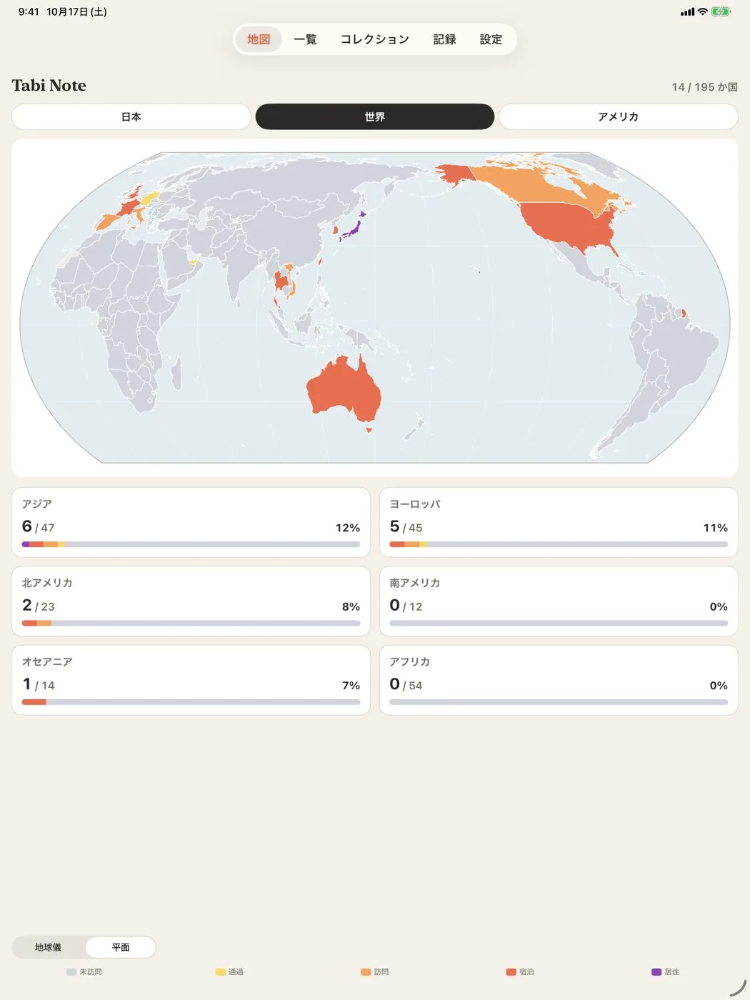

Tabi Note は、旅した場所を地図に色で塗って残すアプリです。日本の47都道府県と1,741市区町村、世界195か国、アメリカ50州を、行ったことのある深さに合わせて4段階で塗り分けます。塗った場所には、行った日・メモ・写真・費用を何回ぶんでも残せます。価格は無料で、iPhone と iPad で使えます。この記事の内容は、2026年11月20日時点の App Store の掲載内容にもとづいています。
014段階で塗り分ける

Tabi Note では、ただ「行った」と印をつけるのではなく、その場所とのかかわりの深さで色を変えます。段階は次の4つです。
| 段階 | 目安 |
|---|---|
| 通過 | 乗り継ぎ・通り過ぎた |
| 訪問 | 降り立って歩いた |
| 宿泊 | 泊まった |
| 居住 | 住んだことがある |
地図は3つあります。
- 日本47都道府県
- 世界195か国。指で回せる3D地球儀と平面地図を切り替えられます。台湾・香港・グアムなどの地域も選べます
- アメリカ50州＋ワシントンD.C.（Pro）
世界地図の日本は、都道府県の記録から自動で色が決まります。全国1,741市区町村を塗る市区町村マップもあり、「居住」にした都道府県の市区町村は無料で塗れます。
02使い方：塗って記録するまでの手順
- 使い方を見る。 はじめての方には、実際の画面で操作を案内するチュートリアルがあります。設定の「使い方を見る」から、いつでも見直せます。
- 地図で地域をタップして、段階を選ぶ。 これだけで色がつきます。場所が分からない町や国は、地図の検索で探せます。地図では押しにくい小さな国や島は、一覧から名前で検索して塗れます。
- 行った記録を残す。 1つの場所に、行くたびに記録を足せます。1回ごとに、行った日・メモ・写真（3枚まで）・費用を残します。
- 昔の旅は、写真からまとめて塗る。 撮影場所が記録された写真から、行った都道府県・国を見つけて、まとめて塗れます。最初に撮った日が「行った日」になります。
- 旅先では「近くのスポット」を使う。 今いる都道府県・市区町村をワンタップで塗れます。近くの名城・道の駅・世界遺産なども近い順に出るので、「行った！」を押して今日の記録にできます。
03旅をふり返る機能

塗って終わりではなく、あとで見返すための機能がそろっています。
- 旅の写真記録に入れた写真を、年・月ごとのアルバムでふり返ります。写真から、その場所の記録へすぐ戻れます。
- 去年の今日前の年の同じ日に行った場所を、写真と一緒に思い出せます。通知を受けるかどうかは選べます。
- 年ごとの振り返りその年に行った都道府県・国・市区町村・スポットを、地図とリストで見られます。1枚の画像にしてシェアできます。
- 数で見る「19 / 47 都道府県」のように、いくつ行ったかがひと目で分かります。段階を点数にした「経験値」や、地方・大陸ごとの達成度も出ます。
- バッジ「10都道府県」「全国制覇」「6大陸制覇」などのバッジを集められます。Game Center の友だちと、行った都道府県・国の数を比べることもできます（参加は自由で、地図や場所は共有しません）。
- ウィジェット塗った日本地図か世界地図と、行った都道府県・国・市区町村の数を、ホーム画面に置けます。
- シェア画像塗った地図やコレクションを、パスポート風・御朱印帳風などの画像にできます。
何日かにわたる旅を1つにまとめたいときは、旅アルバム（Pro）を使います。期間とタイトルを決めるだけで、表紙・訪れた場所の地図・日ごとの写真とメモ・費用の合計が1冊になります。日付が続いた記録があると、「この旅をまとめませんか」とお知らせが出ます。
04テーマで集めるコレクション

コレクションは、テーマごとの場所に「行った」「行きたい」を記録する機能です。地図と一覧で、どこまで回ったかがひと目で分かります。各スポットの説明や住所、公式サイトも見られます。
パックは全部で22あります（2026年11月20日時点）。主なものは次のとおりです。
- 世界遺産（1,272件）
- 日本の名城（200城）・道の駅（1,234駅）
- 日本の国立公園、四国八十八ヶ所、全国の一宮
- 名山、全国のスキー場、温泉地
- 空港・動物園・水族館・灯台
- プロ野球の球場、国内と欧州のサッカースタジアム
05Pro でできること
アプリ本体は無料です。App Store の説明で Pro と書かれているのは、次の機能です。
| Pro の機能 | 中身 |
|---|---|
| コレクション | すべてのパックが使い放題 |
| 旅アルバム | 何日かの記録を1つの旅にまとめる |
| 費用の集計 | 年ごと・旅ごと・都道府県（国）ごとの合計。通貨ごとに集計し、換算はしません |
| 地図の色 | 標準・桜・海・森・夕焼け・モノクロの6種類 |
| 市区町村マップ | 全国1,741市区町村を塗る |
| アメリカの地図 | 50州＋ワシントンD.C. |
| シェア画像 | ロゴなし・高解像度 |
| 記録の URL | お店や宿のページを、名前をつけていくつでも |
| 広告の非表示 | 画面下のバナーも、全画面の広告も |
Pro は月額か年額のサブスクリプションです。パックと市区町村マップは、単品の買い切りでも購入できます。料金は、アプリの中の購入画面で確かめてください。
注意Pro は自動更新です。現在の期間が終わる24時間前までに解約しない限り、同じ料金で更新されます。解約は App Store の「サブスクリプション」からできます。
06記録の保存と同期
アカウント登録は要りません。記録は、自分の端末と iCloud にだけ保存されます。同じ Apple アカウントの iPhone・iPad で自動的に同期し、機種変更しても引き継げます。
位置情報と写真の扱いは次のとおりです。
- 「近くのスポット」の位置情報は、端末の中だけで使います。
- 「写真から塗る」の写真と位置情報は、端末の外には送りません。
07まとめ
Tabi Note は、行った場所を4段階の色で塗り、1回ごとの記録を重ねていくアプリです。最初は、行ったことのある都道府県をタップして塗るか、写真からまとめて塗るところから始めると、地図がすぐ埋まります。そのあとは、行くたびに日付・メモ・写真・費用を足していけば、年ごとの振り返りや「去年の今日」で見返せます。
ダウンロードは App Store から。App Store で見る